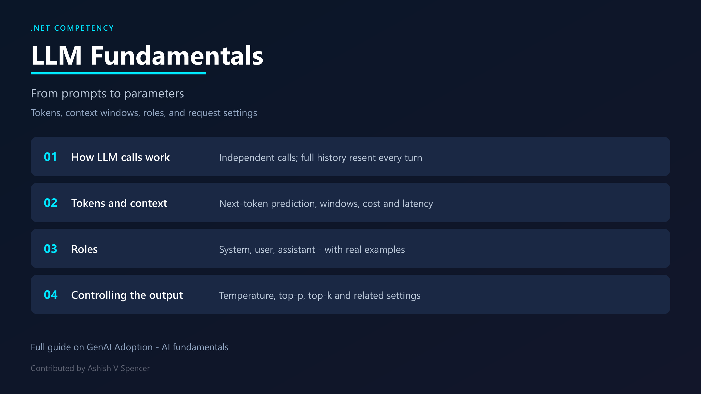
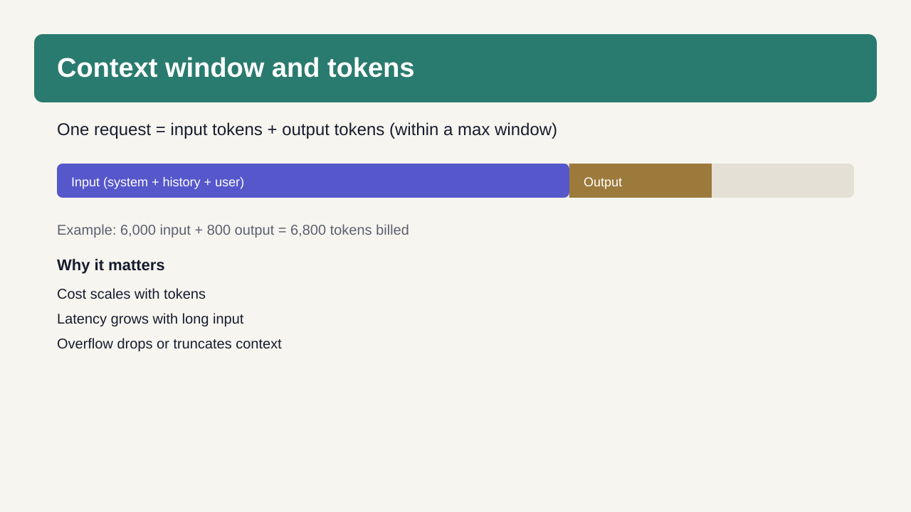
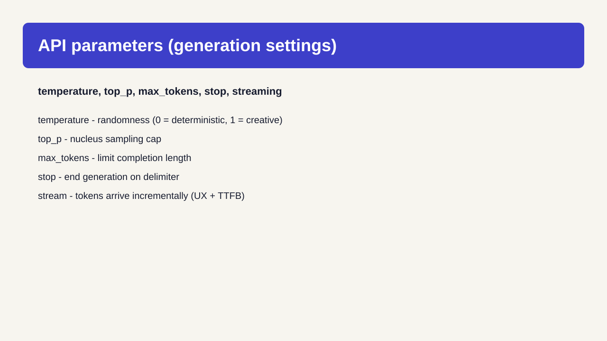

From prompts to parameters: how LLM calls work, what tokens and context windows mean, how roles shape a conversation, and which request settings control every answer.

On this page
How LLM calls work

Every API call is independent. Each request is processed on its own. Nothing carries over to the next call. There is no session or state on the model side. Anything the model needs must be in the request. Any “memory” is your app’s job.
The model doesn’t remember. In call 1 you might say “My name is Ashish” and get a friendly reply. In call 2, if you send only “What’s my name?”, the model answers that it doesn’t know — unless your app resends earlier turns.
Chat apps only seem to remember: they store history and send it again on every call. See also What is an LLM?
Each call resends the whole chat
Request shape for turn 3 (simplified)
messages: [
{ "role": "system", "content": "You are a concise…" },
{ "role": "user", "content": "hi" },
{ "role": "assistant", "content": "How can I assist…" },
{ "role": "user", "content": "what's schengen?" },
{ "role": "assistant", "content": "I couldn't find…" },
{ "role": "user", "content": "what is Pink Floyd?" }
]| Turn | Messages | Input tokens (example) |
|---|---|---|
| 1 | 2 | 43 |
| 2 | 4 | 72 |
| 3 | 6 | 145 |
Measured on a local Llama 3.2 model through Ollama. Questions stayed short, but input kept growing because every earlier turn is sent again.
Tokens and context

LLMs predict the next token. A token is a chunk of text — a word, part of a word, or punctuation. The model writes its answer one token at a time. It predicts plausible text; it doesn’t look facts up. That’s why it can sound confident and still be wrong.
- ~4 characters ≈ 1 token in English text (rough rule)
- ~1,000 words ≈ 1,300 tokens in English
- More tokens per word for code, JSON, Hindi, Urdu, and other scripts
Context window: the limit per call
Example: a 128,000-token window. Input and output must both fit inside it.
| Part of the call | Tokens (example) |
|---|---|
| History: 10 questions + 10 answers | 15,000 |
| Your new question | 100 |
| Room left for the reply | up to ~112,900 |
| Context window (limit) | 128,000 |
When it overflows: the app drops the oldest messages, summarizes old turns, or the API returns an error. Bigger isn’t always better — details buried in the middle of very long inputs get less reliable attention. More: Context window & tokens.
Tokens drive cost and latency
- Input tokens — everything you send: system prompt, chat history, documents, and the new question.
- Output tokens — everything the model writes. Often priced higher per token than input.
- Latency — more input to read and more output to generate means a longer wait.
Long chats get slower and costlier because every turn resends all earlier turns. Controlling what goes into the prompt is a core AI engineering skill.
Try it: the tokenizer
Paste text into a tokenizer and compare characters with tokens. Each model family splits text its own way.
Compare these in a tokenizer
English: The quick brown fox jumps over the lazy dog.
C#: public int Add(int a, int b) => a + b;
Tool: OpenAI Tokenizer (platform.openai.com/tokenizer)Roles

| Role | Purpose |
|---|---|
| system | The developer’s standing rules — persona, tone, format, limits. Sent first, with every call. Users usually never see it. |
| user | The person’s input — questions, requests, pasted text. Your code can add content here too (e.g. an email to classify). |
| assistant | The model’s earlier replies — sent back as history so it knows what it said. You can also write example answers here (few-shot). |
A conversation is an ordered list: system → user → assistant → user → … (model writes the next assistant message). Later: a tool role can carry results from functions your code runs. More: Roles: system, user, assistant.
Example: food delivery support bot
System (written once by the developer)
You are a food-delivery support assistant.
Only help with food orders. Be polite.
Never promise refunds over a fixed limit.User: My biryani arrived cold. Assistant: Apology plus refund within policy. The customer never sees the system message, but it shapes tone, topic, and limits.
Example: code review assistant
Multi-turn review
system: You are a senior .NET reviewer for a banking team. List security issues first.
user: Review: new SqlCommand("SELECT Name FROM Users WHERE Id = " + id)
assistant: 1. SQL injection: id is concatenated. Use a parameter.
user: Show me the fixed version.“Show me the fixed version” only makes sense because the assistant reply is in the list. Remove it and the model no longer knows what to fix.
Role says who; content says what
| Role | Written by | Required? |
|---|---|---|
| system | The developer | Optional; used in almost every app |
| user | The person, or your code | Yes — the model replies to it |
| assistant | The model, or you for examples | Optional — history or few-shot |
Putting rules only in a user message is weaker — a later user message can override them. Prefer durable rules in system.
Controlling the output

For each next-token step, the model ranks candidates. Top-k and top-p decide which candidates stay in the running. Temperature decides how adventurous the pick is among what remains. These are request settings, not prompt text — writing “use temperature 0” in the prompt changes nothing.
| Parameter | What it controls | Typical values | Ollama name |
|---|---|---|---|
| Temperature | Randomness of word choice | 0–0.3 facts, 0.7 chat, 1+ creative | temperature |
| Top-p | Keep top tokens whose cumulative probability ≤ p | 0.9–1.0 | top_p |
| Top-k | Keep only the k most likely tokens | 20–50 | top_k |
| Max tokens | Hard limit on output length | Task-dependent | num_predict |
| Stop sequences | Stop when this text appears | \n\n, END | stop |
| Repeat penalty | Discourages repeating words | 1.0 (off) to 1.2 | repeat_penalty |
| Seed | Same seed → more repeatable output | e.g. 42 | seed |
| Context size | How much context Ollama uses | e.g. 8192 | num_ctx |
Prompt levers (instructions, few-shot, JSON, templates) are covered in Controlling the output.
Temperature
- Low (0–0.3) — almost always picks the top candidate. Classification, extraction, code, facts.
- Medium (~0.7) — variety while staying sensible. General chat and explanations.
- High (1.0+) — lower-ranked tokens appear more often. Brainstorming and creative writing — more drift and mistakes.
Even at 0, answers can vary slightly between runs. Don’t depend on identical output.
Top-p (nucleus sampling)
Keep adding candidates from the ranked list until their probabilities sum to p. Drop the long tail of unlikely tokens. It adapts: when the model is confident, few tokens stay; when unsure, more stay. Rule of thumb: tune temperature or top-p aggressively, not both without reason.
Top-k
k = 1 keeps only the top candidate (near-identical output). k = 50 filters almost nothing. Weakness: same count whether the model is 99% sure or unsure — top-p adapts; top-k doesn’t. OpenAI’s API has no top-k; Claude, Gemini, and Ollama support it.
How settings work together
Top-k and top-p fence in the candidates; temperature decides how adventurous the pick is inside that fence.
| Temperature | Top-p | Top-k | Result |
|---|---|---|---|
| 0 | 0.9 | 40 | Same answer every time (mostly) |
| 0.7 | 0.9 | 40 | Some variety, sensible answers |
| 1.5 | 0.95 | 100 | Lots of variety, some odd answers |
| 1.5 | 0.3 | 5 | Variety without as much nonsense |
Strengths and trade-offs
| Setting | Best for | Watch out |
|---|---|---|
| Temperature | Every app — low for facts and code, higher for ideas | Doesn’t remove bad candidates; high values drift |
| Top-p | Fence creative output at high temperature | Harder to reason about with temperature |
| Top-k | Small local models, testing, debugging | Doesn’t adapt; not in OpenAI API |
Practical rule: tune temperature first, add top-p only if output turns odd, and don’t change all three at once.
Which setting for which job?
Ask: “If I ran this twice and got different answers, would that be a problem?”
| If… | Settings | Examples |
|---|---|---|
| A different answer is a bug | Temp 0–0.2 | Tag transactions, extract JSON, code from policy, support email classification |
| Slightly different is fine | Temp 0.5–0.7 | Customer support tone, explaining concepts, meeting summaries |
| Different is the point | Temp 0.9–1.2 + top-p 0.9 | Product names, A/B subject lines, quiz questions, hackathon ideas |
| Need identical results | Temp 0 + top-k 1 + seed | Automated tests of AI features, debugging a prompt change |
Key takeaways
- Every call is independent: the app resends the whole conversation.
- Tokens drive cost, latency, and the context window limit.
- System sets the rules, user asks, assistant carries the history.
- Temperature, top-p, and top-k are request settings, not prompt text.
Internal use only.